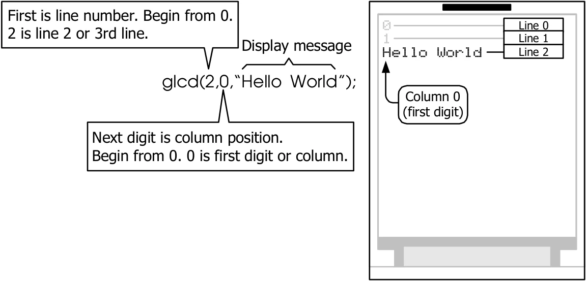
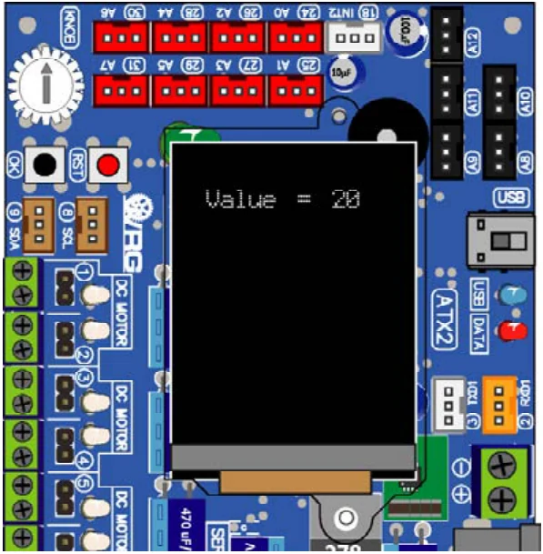

5.3.1 glcd
It is the function for display message on the color graphic LCD screen. The default display is 21 characters, 16 lines with smallest (default) font size.
Syntax
void glcd(unsigned char x, unsigned char y ,char *p,...)Parameter
x - line number. Value is 0 to 15
y - character position. Value is 0 to 20
*p - the display message and special character or symbol for determine the display as follows :
%c or %C - display one character
%d or %D - display integer from -32,768 to 32,767
%l or %L - display integer from -2,147,483,648 to 2,147,483,647
%f or %F - display floating point ( 3-digit maximum)
Example 5-1
glcd(2,0,"Hello World");
// Show message; Hello World at left end position of line 2
Example 5-2
int x=20;
glcd(1,2,"Value = %d",x);
// Display both charater and number same line
// Start from column 2 of line 1
Original manual, pages 76–77